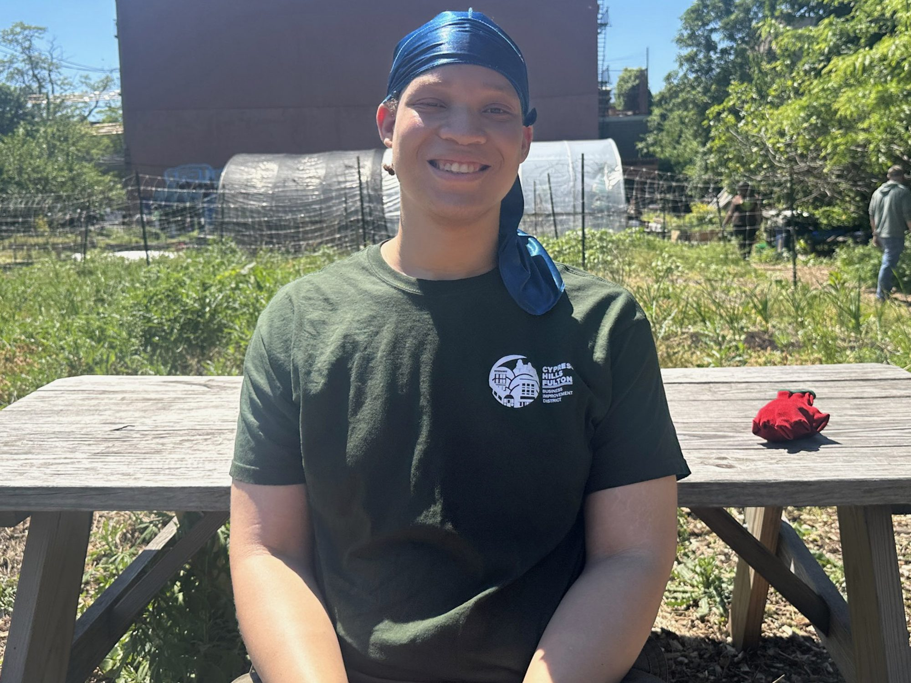

While other teenagers may have snoozed the Saturday morning away, Heavenleiann Schuler crouched low onto dirt, plucking weeds away from a flourishing garlic bed. The sun beaming down on the urban farm in Brooklyn made the work hot and sweaty, but Schuler, 16, found a calming ease in it.
“One of my favorite things about weeding is you could never really go wrong,” she said. “It’s not too many rules. It just helps the plants, and I feel like I’m helping the Earth.”
She is one of the youth who work on East New York Farms, a half-acre urban farm where young people learn to grow agriculture that feeds their neighbors. Since 1998, Brooklyn teens like Schuler have learned to provide their community with fresh food while also learning about themselves — whether it be what aspects of farming they enjoy, like weeding, or about the systemic issues East New York Farms works to address.
“East New York is here as a food desert. Mostly it’s just fast food restaurants and a lot of fast food strips,” Schuler said. “But that’s okay because we’re here to introduce different food and be able to make it affordable for others.”
Inside the farm’s lush space, chirping birds and chattering teens replaced the rattle of a nearby elevated train. Volunteers pushed wheelbarrows of mulch past fruit trees and rows of vegetables, careful not to disturb worker bees buzzing around the farm’s apiary.
‘Effort is put into every single thing you eat’
The youth work as part of a tiered internship program, in which first-year interns go through three rounds of interviews — a process Riapos called “pretty intense” to join the program. Once accepted, they spend their first year exploring each aspect of the farm’s programming to see what they enjoy.
The farm opened in 1998 as part of a participatory practice with the Pratt Institute, which conducted community surveys to figure out what the community needed, according to the farm’s project director, Ariella Riapos. The lack of nutritious food in one of the poorest community districts in the city dovetailed with the area’s young people to create the urban farm organization.
“We have a lot of youth, and we need something for the youth to do,” Riapos said. “Food insecurity is a problem, but we have the means to feed ourselves.”
Nearly 30 years later, teens continue to grow produce that serves the neighborhood’s large immigrant population that calls East New York home. These crops, like scotch bonnet and callaloo, are typically found in residents’ native countries and sold at a weekly farmers’ market on Saturdays and Wednesdays.
After an intern’s first year on the farm, the youth are considered returning interns who pick a track to focus on, including composting, community engagement or the farmers’ market. Senior interns take on leadership positions within their chosen track — like Joshua John, 20, a compost senior intern, who sifted through soil and food scraps in a thick pair of compost gloves.
Joshua said he grew up five minutes away from the farm but did not know what it was until a staff member visited his high school to recruit new interns.
“I realized, ‘Wait, this thing I thought was just a weed bed is actually a garden,’ and I always used to pass it,” he said. “I came here, signed up and I’ve been here ever since.”
Four years later, he works to create compost and distribute it throughout East New York. By being a part of the farm, Joshua said he is “battling food poverty within East New York” by growing crops like bitter melon, an edible fruit grown on East New York Farms that is typically found on vines in Asia, Africa and the Caribbean.
When he is not working on the farm, Joshua also cooks, hoping to become a culinary teacher. Working on the farm has given him an appreciation for new ingredients — like green tomatoes and flowers that grow on bok choy and garlic chives — fostered by the care and anticipation that went into growing them.
“I was able to find ingredients I never even knew existed,” he said. “For example, garlic scapes, which are my favorite thing ever. I always like to check the garlic to see if they’re growing yet.”

The farm is also equipped with running water and a four-burner stove that staff members cook different produce each Friday over the summer for the youth to “experiment with what they’re actually growing,” Riapos said.
It is part of the farm’s mission to “build a healthy relationship with food all around, from the planting to the harvesting, to the actual eating of it,” they said.
Before his time on the farm, Joshua said, “I was a quiet person, but not on purpose, more of like, I didn’t know how to interact.”
“Through East New York Farms, I was able to kind of create a personality for myself,” he said.
Joshua’s younger brother, Matthew John, 17, also works on the farm. While Joshua created compost, he worked to set up the farm’s irrigation, running a small hose to water every plant separately.
In the past, he would ride a bike around to different neighborhoods in Brooklyn, collecting their food waste for composting. Matthew said that growing food on the farm “shows you how much effort is put into every single thing you eat.”
“For example, garlic at the store — you just see a bag of garlic, grab it and that’s how quickly you get the food,” he said. “Working here, you realize the garlic starts from one small piece. You put it in the ground, and then you have to wait months for it to grow. You have to take care of it during those months.”
A Model for Other Communities
“The community is very Caribbean, Black American, Hispanic and South Asian, so we try to grow crops that are familiar to those cultures,” Riapos said. “So that folks have something culturally relevant to eat, not just things that they won’t use.”
The market accepts all forms of government assistance, from city food stamps to coupons from the federal Farmers’ Market Nutrition Program, and runs from June to November each Saturday. But the need for fresh food in East New York is constant, where childhood and adult obesity is greater and more prevalent than it is citywide, according to the New York City Food Policy Center at Hunter College.
While Riapos said they hope the farm continues to deliver fresh food for the people of East New York, they also hope it can serve as a model for other urban farm organizations throughout New York City, helping other communities reap increased access to fresh food.
They also want the farmers’ market to expand to local businesses.
“The hope is to start getting to corner stores and supermarkets, so that folks can get hyperlocal fresh food at more affordable prices,” Riapos said.
For the youth who work on the farm like Schuler, their time growing food for their community has made her more aware of why issues in East New York persist.
“They say that East New York has one of the highest rates of obesity, and I’m like, if you guys are just giving us fast food, maybe that’s not the right thing,” she said.
But while her role in East New York Farms has opened her eyes to issues affecting her community, it has also shown her what she can do about it.
“I’m gonna make sure that garlic doesn’t have those weeds because we need our garlic to flourish for all of our community,” she said.
About the Contributor
Lilly Sabella is a journalist from Queens, New York, and a fellow with the Solutions Journalism Network’s Youth Building and Belonging cohort. Her work has appeared in The City Reporter, The Nashville Banner and Rewire News Group.